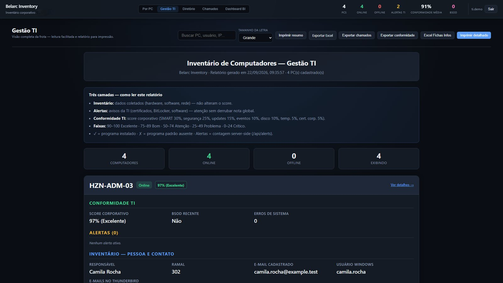

01EM USO INTERNO
Inventário · Windows · suporte de TI
Belarc Inventory
Co-desenvolvi um sistema que reúne o inventário das estações e contexto técnico para apoiar o atendimento e a manutenção.
Na práticaInformações da máquina ficam ligadas ao suporte, facilitando entender o equipamento antes de agir.
Rust · Axum · SQLite · Windows
